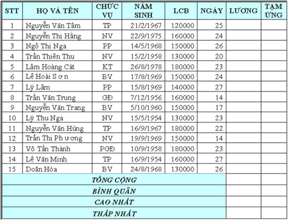

Bài tập Excel 6
Nhập và trình bày bảng tính như sau:

Yêu cầu:
Câu 1: Thêm vào bảng cột TUỔI bên cạnh cột NGÀY, sau đó, tính tuôi của nhân
Câu 2: Tính lương của nhân viên = LCB * NGÀY.
Câu 3: Tính TẠM ỨNG = 80% * LƯƠNG.
Câu 4: Thêm vào một cột THƯỞNG bên cạnh cột LƯƠNG, tính THƯỞNG theo yêu cầu sau: Nếu CHỨC VỤ là GĐ thưởng 500 000, PGĐ thưởng 400 000, TP thưởng 300000, PP thưởng 200 000, còn lại thưởng 100 000
Câu 5: Thêm vào cột CÒN LẠI ở cuối bảng tính, tính CÒN LẠI = LƯƠNG + THƯỞNG – TẠM ỨNG. Tính TỔNG CỘNG, BÌNH QUÂN, CAO NHẤT.